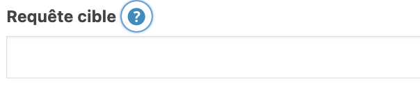

Checklist de création et d'optimisation du site web de l'asso
Optimisation SEO
Cette seconde partie traitera de la partie consacrée principalement au SEO et de son optimisation de base.
Cette seconde partie traitera de la partie consacrée principalement au SEO et de son optimisation de base.
On appelle le Heading les différents niveaux de titre de sections
et de pages. Les niveaux sont : H1, H2, H3, H4, H5, H5, H6.
Chaque
page doit obligatoirement contenir un titre h1. Celui-ci est
normalement défini dans le titre de page suivant le thème utilisé.
Dans les autres cas, il doit être utilisé dans le bloc d'ajout de
texte. À la suite d'un titre H1, chaque section doit comprendre un
titre H2. Si un autre titre dans la même section suit le titre H2,
il doit être de niveau 3 (H3). Les titres de niveaux 4, 5 ou 6 ont
moins d'importances mais s'ils sont utilisés doivent suivre
l'ordre des niveaux. (ex de cette page
Abonite)
Le poids des images jouent un rôle important sur les performances
du site, performances qui impactent le positionnement dans les
résultats de recherche. Pour optimiser les images, dans un premier
temps, il faut changer le format des images et les passer de jpg
ou png en WebP. Des site comme
Convertio, permettent de
changer les formats d'images.
On peut également juste réduire le poids de l'image tout en
conservant son format, par exemple en utilsant un site comme
Compress JPEG.
Lors d'un ajout d'une image dans Wordpress, certaines pratiques
doivent être observées. La première est de bien nommer l'image
avant de l'uploader dans Wordpress et de retirer le nom de base de
l'image qui n'est pas optimiser ni représentatif de l'image ou de
ce que l'on veut retranscrire.
Deuxièmement, une fois l'image uploader dans Wordpress, il faut
impérativement ajouter du contenu au niveau du champ
Texte alternatif dans la partie droite
de l'écran.
Pour qu'un article ou une page soit bien prise en compte par les robots Google et ainsi bien le/la référencer, YOAST SEO permet de remplir 2 attributs importants : la balise META TITLE et la balise META DESCRIPTION. Par défaut, YOAST défini une structure de la balise en fournissant des éléments type (Titre, Page, Séparateur, Titre du site). On peut le laisser tel quel, mais pour une meilleure lisibilité par les robots, il convient de changer ces éléments en remplaçant les éléments rempli par défaut par :
La balise META DESCRIPTION doit comprendre une description courte et accrocheuse de la page ou de l'article. Ce court résumé apparaît dans les résultats.

Le Slogan est visible à côté du titre dans l'onglet de navigation. On peut penser qu'il a peut d'intérêt mais Google le prend également en compte dans le référencement naturel. En plus de ça, il peut déclencher chez l'utilisateur, s'il est suffisament accrocheur, de visiter le site. On peut le définir directement dans le back-office de Wordpress dans la partie Apparence > Personnaliser > Identité du site
Pour un référencement optimal, il est extrèmement important de bien définir sa liste de mots clés. Les mots clés sont les mots que l'on veut mettre en avant et que les utilisateurs pourraient utiliser pour effectuer une recherche. Ces mots clés devront être utilisés dans les pages et articles de manière conséquente mais surtout stratégique. Afin d'augmenter leur importance et leur impact, il faut les mettre en évidence de facon à ce que Google les prenne en considération. Pour cela, il convient de les mettre en gras. Les mettre en gras les mettra dans une balise dans le code HTML que Google prend particulièrement en considération. Pour renforcer ces mots clés, YOAST SEO propose de les ajouter dans sa liste de requête. Un champ est dédié à cela :
